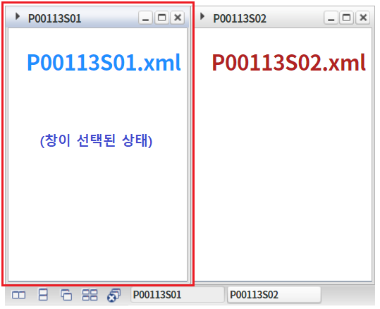
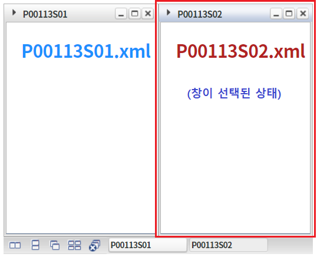

WindowContainer의 'getSelectedIndex' 메소드를 사용하여, 선택된 윈도우의 인덱스를 반환받는 예제입니다.
선택된 윈도우의 인덱스 반환 받기
1
STEP 1: 윈도우를 선택합니다.
WindowContainer의 왼쪽에 배치된 창 'P00113S01'을 선택합니다.
Image 1.브라우저(Chrome) 실행 예시

2
STEP 2: 선택된 창의 Index 반환받기
'선택된 창의 Index 반환 받기' 버튼을 클릭합니다.
숫자형 값 "0"이 alert됩니다.
3
STEP 3: 윈도우를 선택합니다.
WindowContainer의 오른쪽에 배치된 윈도우 'P00113S02'를 선택합니다.
Image 2.브라우저(Chrome) 실행 예시

4
STEP 4: 선택된 창의 Index 반환받기
'선택된 창의 Index 반환 받기' 버튼을 클릭합니다.
숫자형 값 "1"이 alert됩니다.
'getSelectedIndex' 메소드를 사용하여 스크립트를 작성합니다.
Example 1.Script
//예제 파일의 스크립트 "scwin.btn_ex1_onclick"를 참고하세요. //선택된 윈도우의 인덱스 반환 받기 var numIndex = wdc_exam1.getSelectedIndex();
getSelectedIndex( )